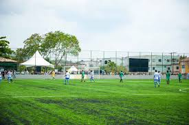

O futebol é o esporte mais popular do mundo e é jogado por duas equipes de 11 jogadores. O objetivo é marcar mais gols que o adversário, colocando a bola dentro da meta rival.
As regras do futebol (futebol de campo ou association football) são definidas pelas 17 Leis do Jogo (Laws of the Game), elaboradas pela IFAB (International Football Association Board) e adotadas pela FIFA. Elas são praticamente iguais no mundo todo, desde jogos amadores até a Copa do Mundo. Aqui vai um resumo claro e prático das principais regras: 1. O Campo de Jogo

Retangular, gramado (natural ou artificial). Medidas aproximadas: 90-120m de comprimento × 45-90m de largura (para jogos internacionais: 100-110m × 64-75m). Tem marcações: linhas laterais, linhas de fundo, círculo central, grande área, pequena área, marca do pênalti etc.
2. A Bola Esférica, com circunferência de 68-70 cm e peso de 410-450g. Pressão entre 0,6 e 1,1 atmosfera. 3. Os Jogadores Cada time: máximo 11 jogadores (1 obrigatoriamente goleiro). Substituições: geralmente 3 a 5 (dependendo da competição; em algumas pode chegar a 5 oficiais + extras por concussão). Um time não pode jogar com menos de 7 jogadores. 4. Equipamento Camisa, calção, meião, caneleiras (obrigatórias) e chuteiras. Goleiro deve usar camisa diferente dos demais. Proibido joias, equipamentos perigosos. 5 e 6. Arbitragem Árbitro principal (tem autoridade total). Assistentes (bandeirinhas), quarto árbitro e, em competições grandes, VAR (árbitro de vídeo). 7. Duração do Jogo Dois tempos de 45 minutos (90 minutos no total). Acréscimos por substituições, lesões, VAR etc. Prorrogação (2 × 15 min) e pênaltis em caso de mata-mata. 8. Início e Reinício do Jogo Pontapé inicial: do centro do campo. Bola deve rolar para frente; pode ser tocada para trás depois. 9. Bola em Jogo e Fora de Jogo Bola fora quando ultrapassa completamente as linhas laterais ou de fundo (no ar ou no chão). Bola em jogo o resto do tempo (inclusive se bater no árbitro). 10. Gol Vale quando a bola ultrapassa completamente a linha do gol, entre as traves e abaixo do travessão. 11. Impedimento (Offside) Um jogador está em impedimento se, no momento do passe, estiver mais perto da linha de gol adversária que a bola e o penúltimo defensor (geralmente o último zagueiro). Não é impedimento se: Recebe a bola de tiro de meta, lateral ou escanteio. Está na própria metade do campo. Não interfere na jogada (não interfere na visão do goleiro ou não tenta ganhar vantagem). 12. Faltas e Condutas Incorretas Faltas diretas (pênalti ou tiro livre direto): Empurrão, chute, derrubada, carga violenta, mão na bola (intencional), etc. Faltas indiretas: Jogo perigoso sem contato, obstrução, goleiro segurando a bola por mais de 6 segundos, etc. Cartões: Amarelo: advertência. Vermelho: expulsão (jogo sujo grave, violência, cuspir, negar gol com mão, etc.). 13 a 17. Procedimentos Tiro livre: direto ou indireto. Pênalti: cobrança a 11 metros. Lateral: arremesso com as duas mãos, acima da cabeça, pés no chão. Tiro de meta (goal kick): do goleiro. Escanteio (corner): quando a bola sai pela linha de fundo tocada pelo time defensor. Outras Regras Importantes Mão na bola: só é falta se for intencional ou o braço estiver em posição "não natural" (acima do ombro, ampliando o corpo). Acidental não é falta na maioria dos casos. Vantagem: o árbitro pode deixar o jogo seguir se a equipe prejudicada se beneficiar. Simulação (cair fingindo falta): cartão amarelo. Goleiro: não pode pegar bola com as mãos se receber de passe de pé de companheiro ou se segurar mais de 6 segundos. Alterações Recentes (2025/2026) Existem pequenas atualizações anuais. Por exemplo, mudanças recentes envolvem regras sobre posse de bola pelo goleiro e protocolos de VAR..jpg)
aqui podemos ver todas as vestimentas e acessórios dos jogadores
Escolha onde chutar e tente marcar nas cinco cobranças!
Está nas suas mãos… ou melhor, nos seus pés!